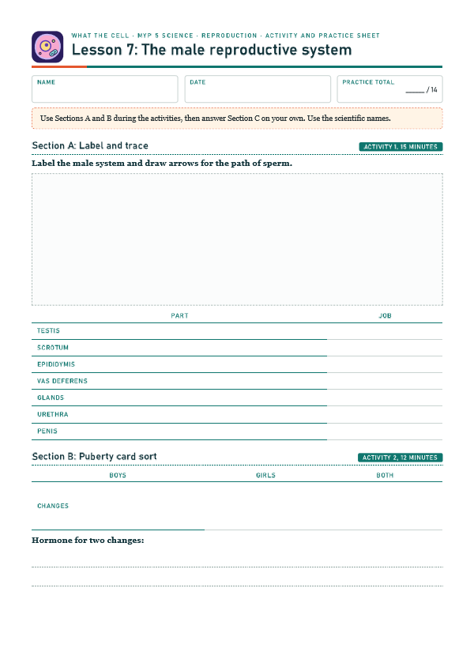

By the end of the lesson you can
- Describe the changes of puberty and the hormones that cause them
- Identify the parts of the male reproductive system
- State the job of each part
- Trace the path of sperm from where they are made to where they leave the body
Keys: arrows or a presentation clicker move the slides, F for full screen. Slides with a red dot have a video or simulation.
Videos (all 5 minutes or less)
- 2:17
Puberty and the hormones involved
FuseSchool. While you watch: Which gland starts puberty? Slide 5.
- 3:06
Male reproductive system
Khan Academy India. While you watch: Where are sperm made? Slide 9.
Simulations
- Lab
Print and practise

Activity and practice sheet
Used in the lesson’s activities, with practice questions. Your teacher has the answers.
Download (PDF)Lesson 7 slides
All 22 slides in one file, to read again or print. The video buttons on the slides open YouTube.
Download the slides (PDF)Revising? The Revision tab on the unit page has the unit notes and review.
Notes: The male reproductive system
puberty
The years when the body changes from a child's to an adult's and becomes able to reproduce. For example: usually starts between about 8 and 14.
hormone
A chemical messenger made in a gland and carried in the blood to the organs it affects. For example: testosterone, oestrogen.
testis (testes)
The male sex organ: makes sperm by meiosis and makes testosterone. For example: there are two testes.
scrotum
The bag of skin that holds the testes outside the body, about 2–3 °C cooler. For example: sperm develop best a little below body temperature.
epididymis
A long coiled tube on each testis where sperm mature and are stored.
vas deferens
The tube that carries sperm from the epididymis towards the urethra.
semen
Sperm mixed with fluid from the glands; the fluid gives sugar for energy and helps sperm swim.
Key words
| puberty | the stage when the body becomes able to reproduce |
|---|---|
| hormone | a chemical messenger carried in the blood |
| testosterone | the main male sex hormone, made in the testes |
| testis (testes) | makes sperm and testosterone |
| epididymis | coiled tube that stores maturing sperm |
| vas deferens | tube carrying sperm towards the urethra |
| semen | sperm plus fluid from the glands |
| urethra | tube through the penis; carries semen or urine |